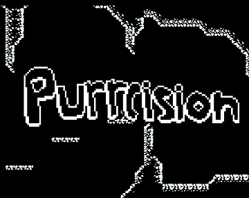
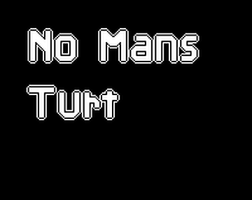
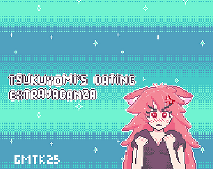
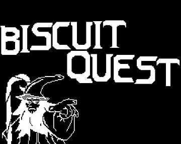
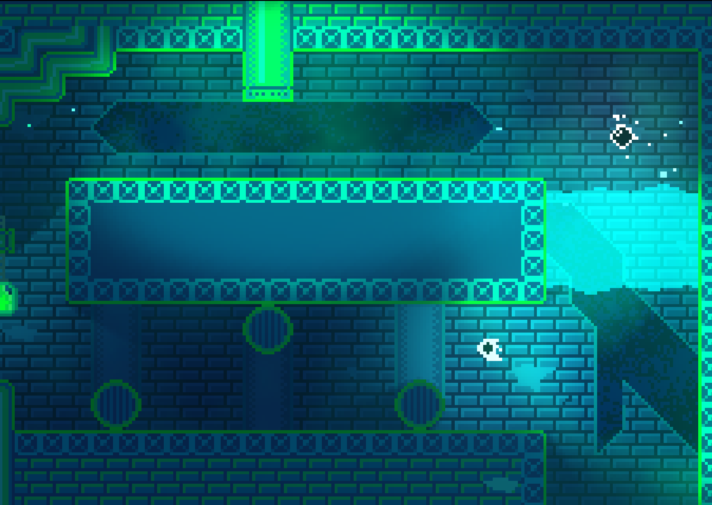
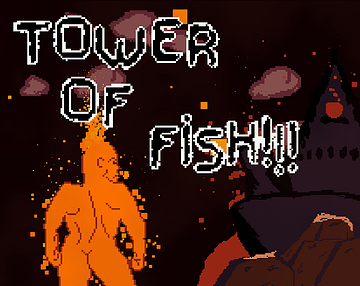
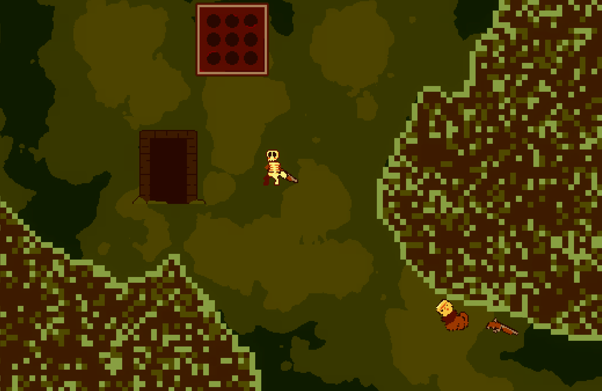

I've been working on games for about 1.5 years. Here are some of the projects that I made.

Purrcision was the first game that I made. I started development in May of 2025, and the game was finished in June. This game is a precision platformer that allows you to lose heavy amounts of progress. I thought that creating a "foddian" game would be easy for my first time because it only needs to be one big level. I was right, and I think that the project turned out really well in the end. As you could assume, the code in this game is pretty messy, but it was my first time so :p.

No Mans Turt is the Second game I made. This one was started for the Space Turtle Game jam in July of 2025, and finished in 2 weeks. I wanted to join a gam jam because it seemed like a good way to improve my skills, and get out another finished project. The game follows a Turtle who has to travel through 3 alien planets. This game turned out alright, but I think some of the gameplay choices were poor and it is a bit of a buggy mess. I did end up winning the jam, but I don't think it counts because there was only 4 submissions.

After No Mans Turt I joined another game jam and created Tsukuyomi's Dating Extravaganza. This was made for the 2025 GMTK jam over the course of 4 days in August. The theme for this jam was loop, and I didn't know how to create anything good in 4 days. Because of this I decided to create a visual novel. Suprisingly, handling text can get super confusing. Overall, I think that this game turned out very good. Other than the game breaking bugs it is very polished. What I did not think about when creating this game is the fact that I would have to show it to other people. It's not a good look at all, especially when nobody understands that its supposed to be funny ;-;. The writing in this game was so rushed, I was literally just saying shit. Despite this I got so much praise for the writing, so Idk man.

The 5th game that I made was Biscuit Quest. This was made in late August 2025 over the course of 5 days for the Brackeys Game Jam. This is probably the project I'm the most proud of. Off the high of praise from Tsukuyomi's Dating Extravaganza I wanted to make something big, and I did it. The scope for this game was a bit absurd given the timeframe and that it was during a school week. The game was supposed to be kinda like VVVVV but with a unique control scheme I stole from the Ufo 50 game Campenella. It had 4 different big levels where you would try to dodge obstacles and speak to Valdor. The actual theme for the jam was risk it for the biscuit, which I didn't actually figure out what mean't until the end of the jam. Either way, I was pretty happy with this one.

After finishing Biscuit Quest I decided that I wanted to make a big big project. I was such a NAIVE and FOOLISH child. I spent like 6 months working on a full version of Biscuit Quest. I wanted to make like a platformer rpg thing, but the movement system it had just really didn't work that well for an rpg. I eventually had to come to the conclusion that the game had massive flaws and it was probably best to let it die. I learned a lot from working on this, but I also wasted a lot of time. I wasn't nearly as productive on the game as I could've been. It's somewhat upsetting, I had so many ideas, and I'm still very attached to the characters. Look forward to seeing the return of valdor and others in future games.

Tower Of Fish is my 6th finished game, and the last game that I worked on. It was made over 9 days for the 2026 Bigmode Game Jam in Febuary. I felt somewhat obligated to make a game for this jam because I'm a big Video Game Dunkey fan. The theme was slick and my game was supposed to be a platformer with really slick movement. I think that this game turned out wellish. The movement is very hard to get the hang of, and a lot of people who have played the game really hate it. I think that it's alright, but it definitley could be slicker. I was trying to go for like a Pizza Tower feel. Overall, this game was kinda half assed. I finished it, and it has some funny ideas, but I could've tried a lot harder.

Finally, we have what I'm working on right now which is a game called The Jungle (for now). This game is going to be a top down roguelike that is very similar to Spelunky. I'm pretty early in development, but I'm hoping that this will be a big game that I can actually finish. Look forward to more news on this, and I have a devlog in the works right now!